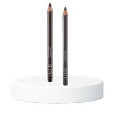
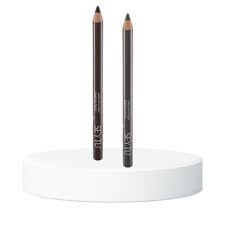

|  |  |
 |
Cuando hablamos de maquillajes nos referimos a esas tecnicas utilizadas para resaltar rasgos faciales y satifascer los deseo de decorar la piel , es por ellos que aqui te mostraremos diferentes tecnicas que podras ultilizar para llevarlo a cabo y asi aprender cuales cosmeticos podras usar para cada ocasion, como preparar tu piel , y el cuidado que debes tener.
Deseas conocer
Aqui conoceras los distintos tipos de cosmeticos que puedes usar para tus maquillajes
El lápiz de cejas ayuda a rellenar y a definir , Su aplicación es súper sencilla, solo debes crear trazos cortos siguiendo la forma natural de tus cejas, luego,con ayuda del cepillo, empieza a peinar y a difuminar el maquillaje para una un look de cejas más natural y poblado. Es importante que prestes atención al color de lápiz de cejas, ya que de este depende que tan natural se lleguen a ver. Si tu cabello es oscuro, utiliza uno o dos tonos por debajo. Si es claro o rubio, utiliza una o dos tonalidades por arriba.
|  | |
|
El delineador de ojos tiene la función de marcar el contorno de tus ojos y aumentar su expresividad, además de agrandarlos y decorarlos. Existen 4 tipos que son:(delinador en lapiz, delineador en gel, delineador en liquido, delinador en plumon. El que vallas a usar queda a tu preferencia.
 |
 |
Las sombras de ojos proveen profundidad y dimensión a los ojos, complementan el color de los mismos, o simplemente atraen la atención. Existe en diferentes colores y texturas. Generalmente están hechos de polvos, pero pueden encontrarse en forma de líquido, de lápiz o de crema.

Es un producto de higiene facial su función principal es eliminar y limpiar los residuos del maquillaje. Se usa como rutina de higiene y cuidado facial, ya que si no retiras tu maquillaje debidamente probablemente aceleres el envejecimiento cutáneo.
La máscara de pestañas, llamada rímel comúnmente en muchas ocasiones debido a la famosa marca que ha terminado dando nombre al producto, es un cosmético que consiste en un pequeño frasco con forma alargada, el cual contiene un pequeño cepillo con el cual se aplica el producto sobre las pestañas a modo de peine para alargarlas y que tomen forma .
Los polvos compactos se presentan en una caja de plástico con un espejo y una esponja para aplicarlos sobre el rostro. Es el tipo de polvo más común. Es multifuncional: fija el maquillaje, unifica el tono de la piel y absorbe el exceso de sebo.
Ayuda a que la piel luzca un mejor aspecto, de igual manera puede ayudar a disminuir la apariencia de algunas imperfecciones.Tiene muchos beneficios: oculta los defectos e imperfecciones, como arrugas y poros dilatados, iguala el tono, protege la piel del exterior.
Permite cubrir o disimular aquellas pequeñas imperfecciones en nuestro rostro o piel, tales como: manchas pequeñas, acné, cicatrices, ojeras, moretones, zonas rojas del rostro, etc.
Ayuda a humectar y cuidar tus labios, hace que las personas con labios delgados se vean más definidos y voluminosos, al sentirte hermosa te da más confianza, entre muchas más cosas. Es muy fácil de aplicar, tiene una fórmula líquida mate que se desliza suavemente, con solo una pasada conseguirás unos labios más intensos.
Brindan un aspecto húmedo, hidratado y jugoso, logrando así crear un look súper sexy y chic.